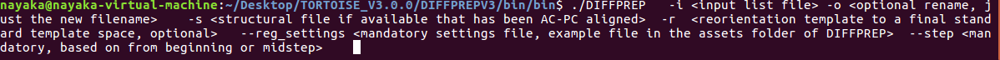
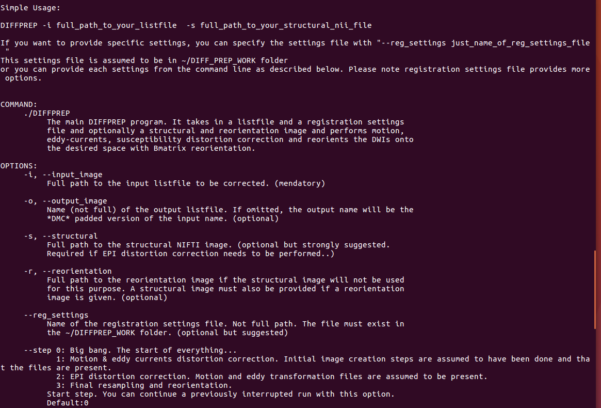
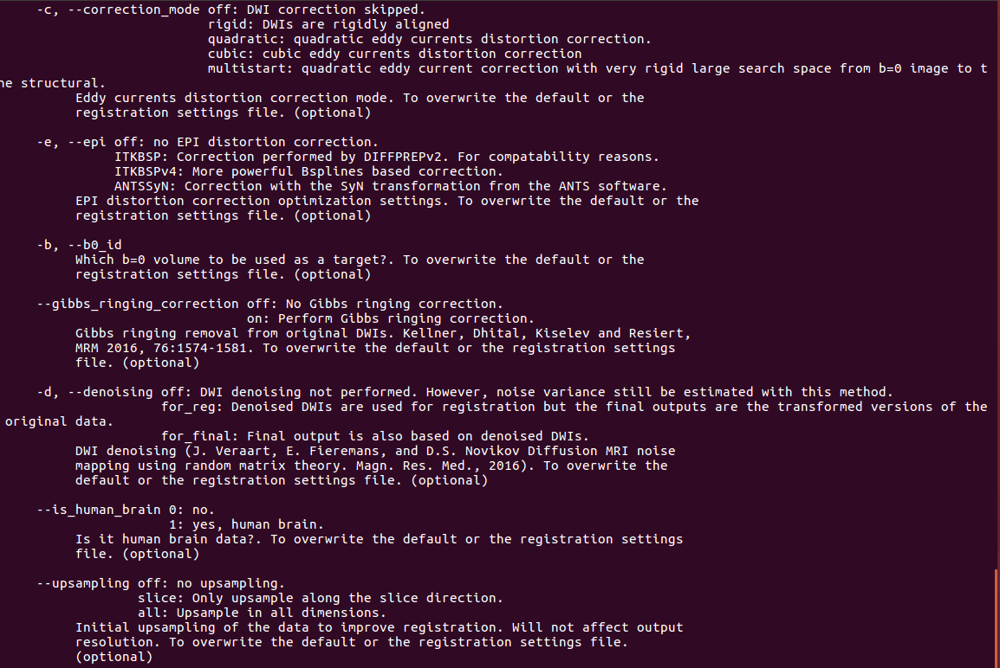
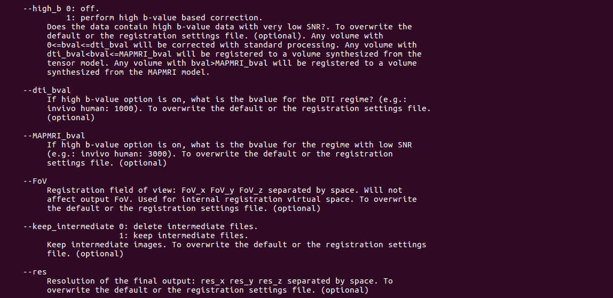
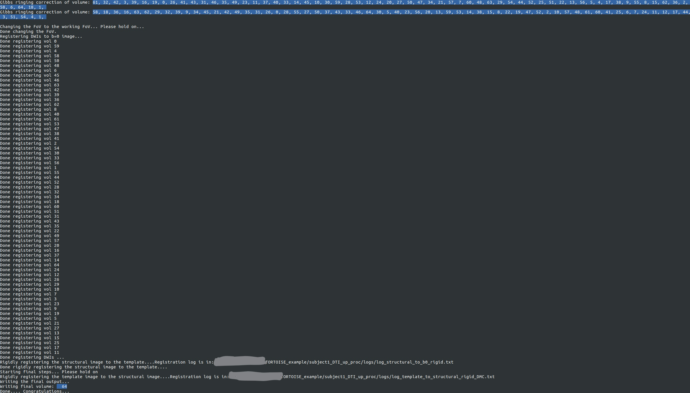

7. STEP 3: EDDY MOTION AND EPI DISTORTION CORRECTION¶
Please note: It is strongly recommended to check your data for artifacts especially if it affects the first b0 image. Since in DIFFPREP processing, the corrections are performed using b0 as the template, it is important that this volume is artifact free. The software by default uses the first b0 but you have an option to specify the b0 volume you would like to use as the template, if the first b0 has some artifacts such as slice dropout or signal inhomegenity artifacts. If your first b0 has interleave slice motion artifact, please delete the volume before processing through DIFFPREP and the software will use the next b0 in the series.
Procedure In the command line if you type ./DIFFPREP you will see the following options to run the DIFFPREP processing.
The syntax to run DIFFPREP is as follows:
Each option is explained as follows:
  Registration settings file will be provided in the TORTOISE folder under the name ‘example registration settings.dmc’ which is set with default settings or to which you can add other options that would be consistently used across all subjects. If you would like to overwrite the registration settings, then the options given in the command line takes higher priority over what is in the settings file. A log of the command run will be saved in the log folder for future reference. This is further explained in the ‘outputs of DIFFPREP section’.
Note
- Please create a DIFF_PREP_WORK folder in your home directory and copy the example registration settings.dmc file in to the folder. The software expects the settings file to be in the DIFF_PREP_WORK folder.
Note
- If you are processing human data, you are not required to provide a registration settings file and the software will process the data with preset options. The options used in processing such datasets, will be written in the proc folder as .dmc. The output resolution will be in the native resolution of the image.
Note
- You may modify the registration settings file before processing to suit your study. The options are explained in the registration settings.dmc (can open with any text editor) and the same file can be used for the entire study.
7.1. Registration steps during DIFFPREP¶
The screenshot will show you an example of the processing steps that occur when running DIFFPREP.
The steps are as follows and depending on your registration settings. The example shown here is for a dataset run with the following settings: gibbs ringing correction-on, denoising-on, no EPI disortion correction.
